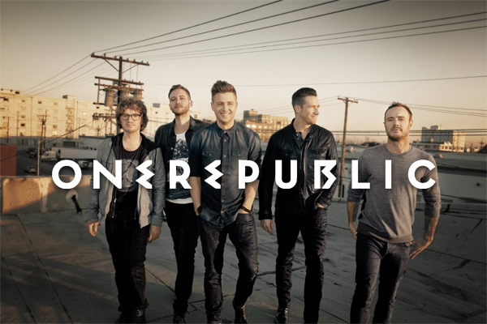

Biografía
Orígenes
Los inicios de OneRepublic se remontan a 1996, cuando dos amigos de Colorado Springs, Ryan Tedder y Zach Filkins, estudiantes ambos y aficionados a la música, deciden montar una banda. Para ello reclutan a un puñado de amigos también aficionados y comienzan a ofrecer pequeñas actuaciones en un local de la ciudad, bajo el nombre de "This Beautiful Mess". Tras abandonar sus estudios, Tedder y Filkins se separan cada uno por su lado y no es hasta 2002 que los dos amigos se reúnen de nuevo, esta vez en Los Angeles, donde Tedder trabajaba como productor y compositor musical. Tras convencer a Filkins para que se mudase a Los Angeles desde Chicago, acuerdan retomar su carrera juntos montando un nuevo grupo, al que denominan "Republic".
Tras contratar a varios músico, el grupo queda finalmente conformado con Tedder como vocalista, Filkins como guitarrista principal, Eddie Fisher en la batería y haciendo los coros, Brent Kutzle con el bajo y Drew Brown como segundo guitarrista. El nombre de la banda se modificó por razones legales e impedir que se pudiera confundir con otros grupos, quedando finalmente como OneRepublic. La banda firma por el sello Velvet Hammer, una filial de Columbia Records y se ponen a trabajar a sus órdenes. Tras dos años y medio de intenso trabajo y dando las últimas pinceladas a su primer álbum, la discográfica decide rescindir el contrato que les ligaba debido a la relevancia que OneRepublic había adquirido en Myspace, que eclipsaba su futuro trabajo discográfico. A raíz de dicha separación, OneRepublic entra en la onda del sello independiente Mosley Music Group, propiedad del reconocido productor Timbaland, con quien firman un contrato de colaboración.
Dreaming Out Loud
De la mano de Timbaland, OneRepublic publica su primer álbum, titulado "Dreaming Out Loud", publicado el 20 de noviembre de 2007 y que se estrenó en el puesto número 14 en las listas estadounidenses. Este trabajo fue producido por Greg Wells e incluye dos canciones producidas por Ryan Tedder. Joe Zook se encargó de mas mezclas del álbum, en el que se aprecian claras influencias de U2, Coldplay, Muse y Snow Patrol y que vino precedido por la publicación del tema "Apologize", que contando con la producción de Timbaland se convirtió en un enorme éxito, alcanzando el segundo puesto en la lista Billboard Hot 100 y vendiendo más de cinco millones de copias, sólo en Estados Unidos.
Waking Up
El 17 de noviembre de 2009 aparece el segundo álbum de OneRepublic, bajo el título de "Waking Up", que incluye los sencillos "All the Right Moves" y "Secrets", un tema este último utilizado en numerosas series de televisión (Lost, Nikita, El aprendiz de brujo) y del que se vendieron más de cuatro millones de copias. Este segundo trabajo de estudio de la banda estadounidense recibió elogios por parte de la crítica y en él ya se puede apreciar la personalidad propia de la banda, con la voz de Tedder añadiendo diferentes matices a las letras.

Native
El tercer álbum de OneRepublic, "Native", fue lanzado el 22 de marzo de 2013, estrenándose en el cuarto puesto de la lista Billboard 200. El sencillo "Feel Again", escrito y producido por Tedder, Kutzle, Brown y Noel Zancanella y fue utilizado para la campaña de Save the Children "Every Beat Matters", cediendo la banda parte de sus ingresos para esta organización humanitaria. No obstante, el sencillo más exitoso de este álbum sería el titulado "Counting Stars", que se aupó en el puesto número dos de la lista Billboard Hot 100, su mejor resultado desde "Apologize". La portada del álbum muestra a cinco animales (zorro, león, búho, gacela y bisonte), representando las distintas personalidades de los miembros de OneRepublic. La gira Tour Native les llevó a ofrecer 21 conciertos en Europa y 52 en norteamérica, ampliando después la gira a Asia y Oceanía, y regresando nuevamente a Europa.

Oh My My
El cuarto álbum de estudio de OneRepublic fue el titulado "Oh My My" y fue lanzado el 7 de octubre de 2016 e incluye sencillos como "Wherever I Go" y "Kids". A finales de 2016 interpretaron el tema "Let's Hurt Tonight" en la ceremonia de los MTV Europe Music Awards, la misma canción que aparece en la banda sonora de la película "Collateral Beauty", protagonizada por Will Smith, Edward Norton y Keira Knightley.